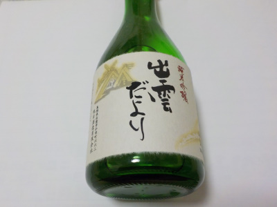
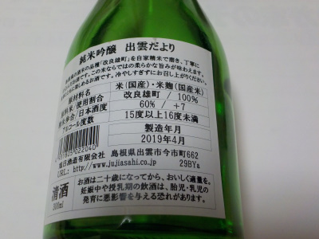

日本酒度数+7の出雲だより
2019/09/27
出雲市の旭日酒造さんの「出雲だより」を飲みました。

スッキリしてて軽やかな甘さで飲みやかったです。

瓶の裏に日本酒度+7と書いてありました。
日本酒度なんてものがあるんですね。初めて気付きました。
0が真ん中で、-が甘口+が辛口だそうです。+7なので超辛口。
日本酒のくどい味よりもスッキリ味が好きなので、私は辛口が好きなんだ。
辛口って舌がピリピリするものかと思ってたんですが、違うんですね。
インターネットで日本酒度を検索するとろいろ書いてありました。糖度や酸度、アルコールや水、味の添加、商品状態の違い等があるので、甘口・辛口の判断は日本酒度だけでは難しようです。
とりあえす私は-のお酒よりも+のお酒を今後買おうと思っています。